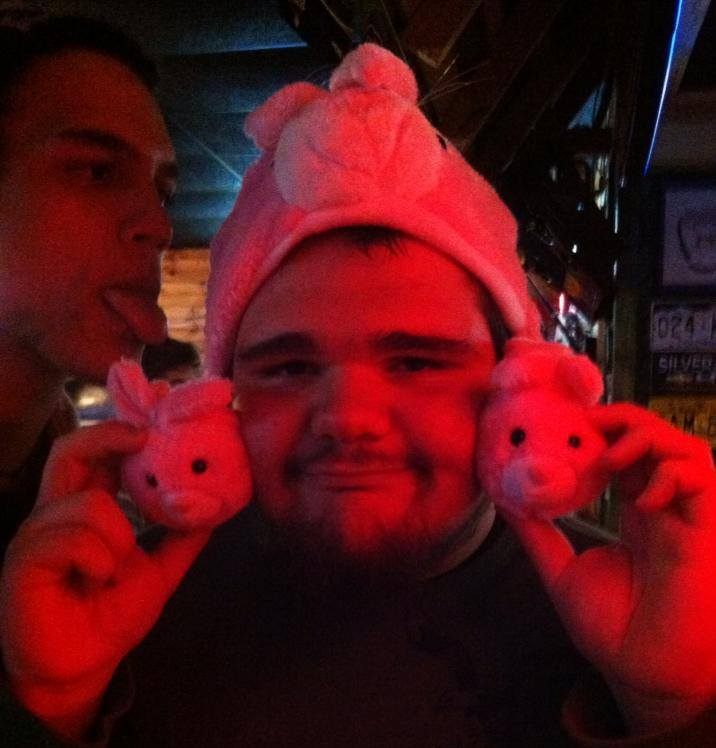
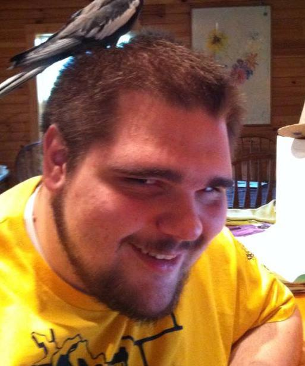

Thomas Bradbury grew up in the country town of Murphy, North Carolina nestled in the mountains. This town was virtually lifeless and owed its sole interesting prospect to the manufacturing plant which dominated its social hierarchy and the recently added casino which employed the abysmally small population of residents who don't habitually shoot up to pass the time. Thomas' childhood was spent playing video games to pass the time in the absence of his working mother and deceased father.
Thomas Bradbury's education was exceptionally on par considering the area in which he received it. Childhood educational development consisted of fine motor skills, social skills, an area which sorely needed a tutor and an extended focus period, and rudimentary logic and processing skills.
Thomas Bradbury's free time was passed at an excrutiating pace utilizing his many off brand lego imposters which originated from the local thrift store. When poorly constructed towers and impresionistic carnival rides whose structural integrity would give an engineer a heart attack failed to satisfy his curiosity and desire to spice up existance, he would often turn to the visual and logistic marvels placed within the many year old video games his mother managed to acquire at a discount from colleagues or flea marts.
Thomas Bradbury's self stated life goals are of a very simplistic and intrinsic nature. Simply put, he wishes to find a self sustaining happiness and be able to venture through his life experiencing as much joy and as little pain as is logistically possible.
Thomas Bradbury at his local bar during his birthday party.
Thomas Bradbury at a good friend's house making a special connection with her pet bird.
